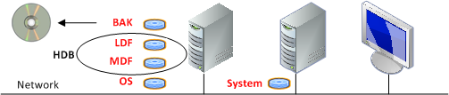
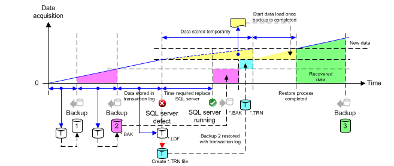

Full Data Backup
Individual databases can be distributed across several servers or storage media to allow for restoration of all data following an SQL Server failure. This is the optimum system topology.

Abbreviation of the Data Files | ||
Abbrev. | Short Description | Description |
BAK | Backup File | Backup file of MDF file |
LDF | Log Data File | Microsoft SQL Server transaction log file |
MDF | Master Data File | Microsoft SQL Server database |
HDB | History Database | Includes all logged history data |
System | System Desigo CC | Program and project data files of Desigo CC |
OS | Operating System |
|

NOTE:
The saved *.BAK files have the same data content for simple and full history backup.
Concept of Full History Data Backup

- Individual databases must be distributed across several storage media to allow for restoration of all data following SQL Server failure.
- If the SQL Server fails , all historical data can be restored under certain circumstances. A failure or unavailability of the SQL Server is recognized if the GMS writer loses the connection to the SQL Server.
- With full History Database backup, the data backup files , or are created automatically based on the stored data volume. You can also manually back up or schedule a backup.
- After creating a backup file , all new data is saved to an additional transaction log file until the next backup procedure. The additional storage in the *.LDF file takes place until a new backup file *.BAK is created.
- Restore transaction log data. Convert the LDF file to a TRN file. See the Microsoft SQL Server documentation for the workflow to convert an LDF file to a TRN file.
- The backup file *.BAK must first be restored after a Server failure.
- After successful restoration of the *.BAK file, the transaction log backup file *.TRN needs to be restored.
- While the SQL Server is down, incoming data (yellow) is temporarily saved to local storage media
 (see HDB Exclusive Locked). Data as of this time can be restored through this backup mechanism.
(see HDB Exclusive Locked). Data as of this time can be restored through this backup mechanism. - As soon as the SQL Server
 is available again, all data is backed up during the next backup .
is available again, all data is backed up during the next backup .
NOTE 1:
In the event of an SQL Server failure, no additional activity log, alarm and online trend data can be saved. The data is saved temporarily to a local storage medium. Make sure the local storage medium has sufficient free space to allow for temporary storage.
NOTE 2:
If the last unfinished transaction prior to SQL Server failure was not saved, it is lost.
NOTE 3:
We recommend creating (similar to a simple backup) a backup *.BAK file of the History Database at regular intervals (recommended daily) and copying the backup data to an external medium.
NOTE 4:
To avoid running out of hard disk space, create a hard disk monitor in Desigo CC for each disk drive used.
NOTICE

Avoid Data Loss
An experienced SQL Server administrator is required to create a TRN file (backup of transaction log) from an LDF file (transaction log). Data may be lost if the TRN file is not created correctly.